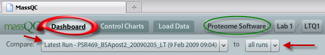
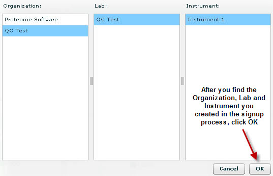
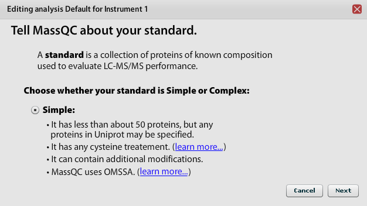
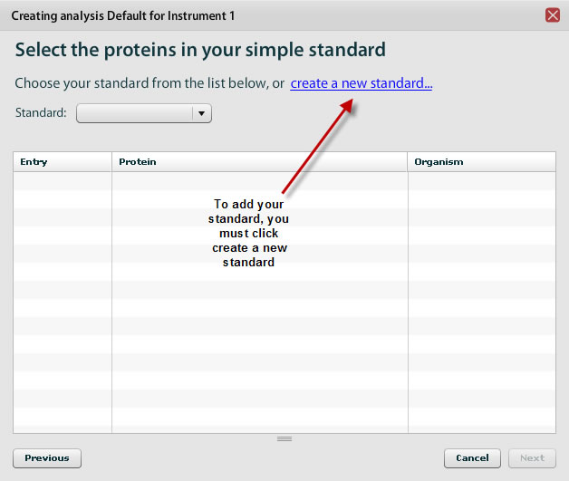
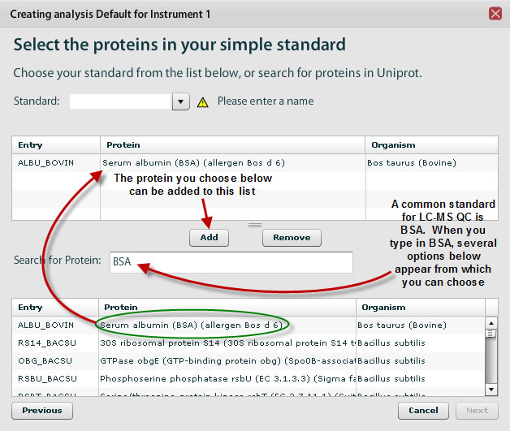
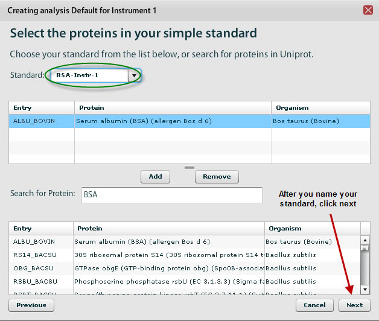
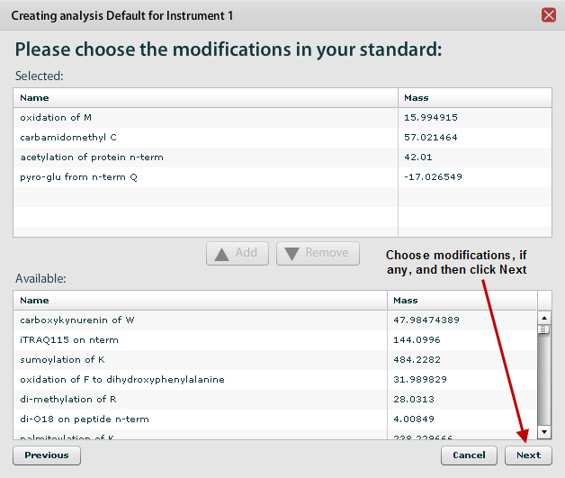
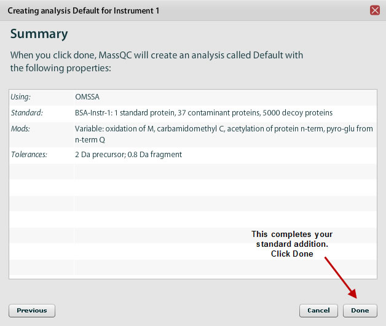
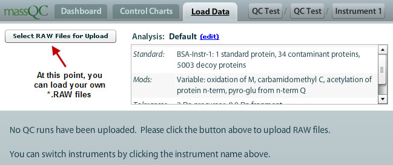

We recommend you choose to run through the Tutorial to familiarize yourself with the look and feel of MassQC . Whether you go through the Tutorial , you will eventually come to a point where you will be able view some sample data or load your own Thermo® Data Dependent Analysis (DDA) MS/MS *.raw data.
In this first example, the Tutorial was closed and you have the opportunity to view pre-loaded data . We have some sample data in MassQC for you to use to get familiar with how the tool works. You land in the Dashboard first. This is where you can view the Latest Run compared to all runs .

Before you load your own data, you must change the Organization , Lab and Instrument to the profile you created during the signup process:

After you choose your instrument, you will click the Load Data tab and Create an Analysis . This process of Creating an Analysis is important because it specifies what the protein (s) is (are) in the standard, the modifications on these proteins, and how the data should be searched with OMSSA or SpectraST .

You will then be prompted to choose the type of standard you wish to load. There is currently one option: Simple. And example of a simple standard is BSA or a simple mixture of several proteins. If the wrong standard is used or modifications assigned incorrectly, your search results may be false and the analysis will be misleading.

After you click Next , you will be prompted to choose a standard . You can either choose a predefined standard or create a new standard . There are a list of common standards that are routinely used in LC-MS/MS QC analysis . These are listed in the drop down menu, Standard:

After you click the create a new standard , you have the option to name a new standard or choose one from a database:

You must choose a standard from the database and then add it the list above. Then you can name your standard. A common way to name your standard is to append your lab name or initials to "BSA" so you know what standard you are using:

You will then be prompted to choose modifications for your standard protein:

When you are finished choosing modifications, you can click next for the summary. Once you have completed this process, click Done and MassQC will create your default standard.

MassQC has now been configured so that you can load your own *.raw files for analysis:

Click here for the instructions on how to load data into MassQC .
| < Previous | Next > |
If you have questions, comments and/or insights about MassQC , you can share them on the MassQC Users Forum .